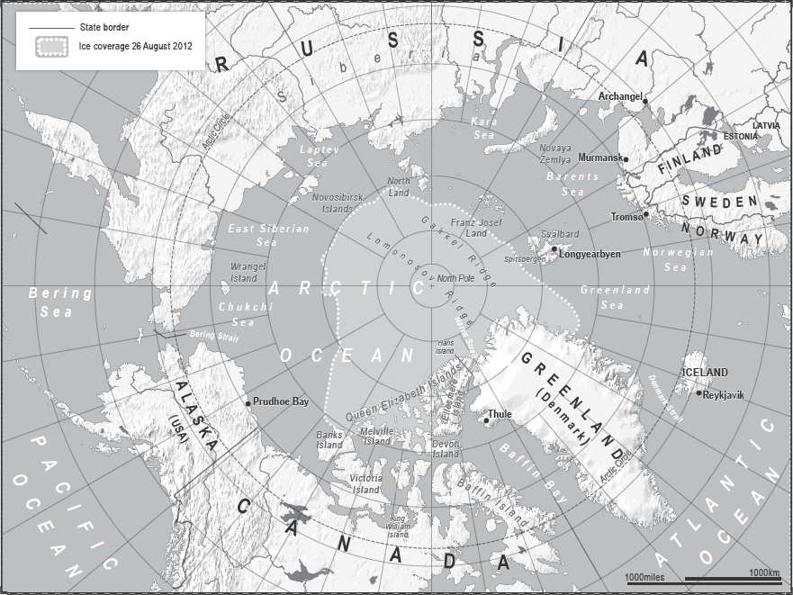
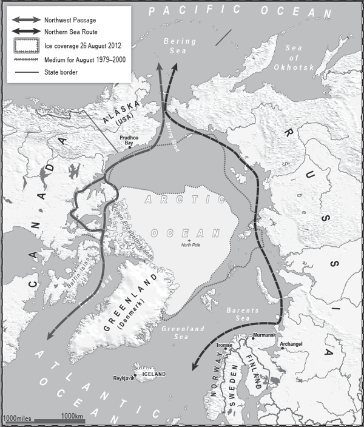

‘There are two kinds of Arctic problems, the imaginary and the real. Of the two, the imaginary are the most real.’
Vilhjalmur Stefansson, The Arctic in Fact and Fable

WHEN THE ICEMEN COME, THEY WILL COME IN FORCE. Who has the force? The Russians. No one else has such a heavy presence in the region or is as well prepared to tackle the severity of the conditions. All the other nations are lagging behind and, in the case of the USA, do not appear to be even trying to catch up: America is an Arctic nation without an Arctic strategy in a region that is heating up.
The effects of global warming are now showing more than ever in the Arctic: the ice is melting, allowing easier access to the region, coinciding with the discovery of energy deposits and the development of technology to get at them – all of which has focused the Arctic nations’ attention on the potential gains and losses to be made in the world’s most difficult environment. Many of the countries in the region have competing claims which they haven’t bothered to press – until now. But there is a lot to claim, and a lot to argue about.
The word ‘arctic’ comes from the Greek artikos, which means ‘near the bear’, and is a reference to the Ursa Major constellation whose last two stars point towards the North Star.
The Arctic Ocean is 5.4 million square miles; this might make it the world’s smallest ocean but it is still almost as big as Russia, and one and a half times the size of the USA. The continental shelves on its ocean bed occupy more space proportionally than any other ocean, which is one of the reasons why it can be hard to agree on areas of sovereignty.
The Arctic region includes land in parts of Canada, Finland, Greenland, Iceland, Norway, Russia, Sweden and the USA (Alaska). It is a land of extremes: for brief periods in the summer the temperature can reach 26 degrees Celsius in some places, but for long periods in winter it plunges to below minus 45. There are expanses of rock scoured by the freezing winds, spectacular fjords, polar deserts and even rivers. It is place of great hostility and great beauty that has captivated people for millennia.
The first recorded expedition was in 330 BCE by a Greek mariner called Pytheas of Massilia, who found a strange land called ‘Thule’. Back home in the Mediterranean, few believed his startling tales of pure white landscapes, frozen seas and strange creatures including great white bears; but Pytheas was just the first of many people over the centuries to record the wonder of the Arctic and to succumb to the emotions it evokes.
Many also succumbed to its deprivations, especially those voyaging to the edge of the known world in search of what doubters said was the ‘mythical’ Northwest Passage through the Arctic Ocean, linking the Atlantic to the Pacific Ocean. One example is Henry Hudson. He may have the second-largest bay in the world named after him, but back in 1607 he probably would have preferred to live into old age rather than be cast adrift and almost certainly sent to his death by a mutinous crew sick of his voyages of discovery.
As for the first person to reach the ‘North Pole’, well, that’s a tricky one given that, even though there is a fixed point on the globe denoting its position, below it the ice you are standing on is moving, and without GPS equipment it is hard to tell exactly where you are. Sir Edward Parry, minus a GPS, tried in 1827, but the ice was moving south faster than he could move north and he ended up going backwards; but he did at least survive.
Captain Sir John Franklin had less luck when he attempted to cross the last non-navigated section of the Northwest Passage in 1845. His two ships became stuck in the ice near King William Island in the Canadian archipelago. All 129 members of the expedition perished, some on board the ships, others after they abandoned the vessels and began walking south. Several expeditions were sent to search for survivors but they found only a handful of skeletons, and heard stories from Inuit hunters about dozens of white men who had died walking through the frozen landscape. The ships had vanished completely, but in 2014 technology caught up with geography and a Canadian search team using sonar located one of the vessels, HMS Erebus, on the seabed of the Northwest Passage and brought up the ship’s bell.
The fate of Franklin’s expedition did not deter many more adventurers from trying to find their way through the archipelago, but it wasn’t until 1905 that the great Norwegian explorer Roald Amundsen charted his way across in a smaller ship with just five other crew. He passed King William Island, went through the Bering Strait and into the Pacific. He knew he’d made it when he spotted a whaling ship from San Francisco coming from the other direction. In his diary he confessed his emotions got the better of him, an occurrence perhaps almost as rare as his great achievement: ‘The Northwest Passage was done. My boyhood dream – at that moment it was accomplished. A strange feeling welled up in my throat; I was somewhat over-strained and worn – it was weakness in me – but I felt tears in my eyes.’
Twenty years later he decided he wanted to be the first man to fly over the North Pole which, although easier than walking across it, is no mean feat. Along with his Italian pilot Umberto Nobile and fourteen crew he flew a semi-rigid airship over the ice and dropped Norwegian, Italian and American flags from a height of 300 feet. A heroic effort this may have been, but in the twenty-first century it was not seen as one giving much legal basis to any claims of ownership of the region by those three countries.
That also applies to the impressive effort of Shinji Kazama of Japan, who in 1987 became the first person to reach the North Pole on a motorbike. Mr Kazama was so intrepid as not to have relied on a shrinking polar ice cap, and is the sort of man who would have ridden through a blizzard in order to get into the history books, but there is no doubt that there is now less ice to cross.
That the ice is receding is not in question – satellite imaging over the past decade clearly shows that the ice has shrunk – only the cause is in doubt. Most scientists are convinced that man is responsible, not merely natural climate cycles, and that the coming exploitation of what is unveiled will quicken the pace.

It is clear from satellite images that the ice in the Arctic is receding, making the sea lanes through the region more accessible for longer periods of the year.
Already villages along the Bering and Chukchi coasts have been relocated as coastlines are eroded and hunting grounds lost. A biological reshuffle is under way. Polar bears and Arctic foxes are on the move, walruses find themselves competing for space, and fish, unaware of territorial boundaries, are moving northward, depleting stocks for some countries but populating others. Mackerel and Atlantic cod are now being found in Arctic trawler nets.
The effects of the melting ice won’t just be felt in the Arctic: countries as far away as the Maldives, Bangladesh and the Netherlands are at risk of increased flooding as the ice melts and sea levels rise. These knock-on effects are why the Arctic is a global, not just a regional, issue.
As the ice melts and the tundra is exposed, two things are likely to happen to accelerate the process of the greying of the ice cap. Residue from the industrial work destined to take place will land on the snow and ice, further reducing the amount of heat-reflecting territory. The darker-coloured land and open water will then absorb more heat than the ice and snow they replace, thus increasing the size of the darker territory. This is known as the Albedo effect, and although there are negative aspects to it there are also positive ones: the warming tundra will allow significantly more natural plant growth and agricultural crops to flourish, helping local populations as they seek new food sources.
There is, though, no getting away from the prospect that one of the world’s last great unspoiled regions is about to change. Some climate-prediction models say the Arctic will be ice-free in summer by the end of the century; there are a few which predict it could happen much sooner. What is certain is that, however quickly it happens and dramatic the reduction will be, it has begun.
The melting of the ice cap already allows cargo ships to make the journey through the Northwest Passage in the Canadian archipelago for several summer weeks a year, thus cutting at least a week from the transit time from Europe to China. The first cargo ship not to be escorted by an icebreaker went through in 2014. The Nunavik carried 23,000 tons of nickel ore from Canada to China. The polar route was 40 per cent shorter and used deeper waters than if it had gone through the Panama Canal. This allowed the ship to carry more cargo, saved tens of thousands of dollars in fuel costs and reduced the ship’s greenhouse emissions by 1,300 metric tons. By 2040 the route is expected to be open for up to two months each year, transforming trade links across the ‘High North’ and causing knock-on effects as far away as Egypt and Panama in terms of the revenues they enjoy from the Suez and Panama canals.
The north-east route, or Northern Sea Route as the Russians call it, which hugs the Siberian coastline, is also now open for several months a year and is becoming an increasingly popular sea highway.
The melting ice reveals other potential riches. It is thought that vast quantities of undiscovered natural gas and oil reserves may lie in the Arctic region in areas which can now be accessed. In 2008 the United States Geological Survey estimated that 1,670 trillion cubic feet of natural gas, 44 billion barrels of natural gas liquids and 90 billion barrels of oil are in the Arctic, with the vast majority of it offshore. As more territory becomes accessible, extra reserves of the gold, zinc, nickel and iron already found in part of the Arctic may be discovered.
ExxonMobil, Shell and Rosneft are among the energy giants that are applying for licences and beginning exploratory drilling. Countries and companies prepared to make the effort to get at the riches will have to brave a climate where for much of the year the days are endless night, where for the majority of the year the sea freezes to a depth of more than six feet and where, in open water, the waves can reach forty feet high.
It is going to be dirty, hard and dangerous work, especially for anyone hoping to run an all-year-round operation. It will also require massive investment. Running gas pipelines will not be possible in many places, and building a complex liquefaction infrastructure at sea, especially in tough conditions, is very expensive. However, the financial and strategic gains to be made mean that the big players will try to stake a claim to the territories and begin drilling, and that the potential environmental consequences are unlikely to stop them.
The claims to sovereignty are not based on the flags of the early explorers but on the United Nations Convention on the Law of the Sea (UNCLOS). This affirms that a signatory to the convention has exclusive economic rights from its shore to a limit of 200 nautical miles (unless this conflicts with another country’s limits), and can declare it an Exclusive Economic Zone (EEZ). The oil and gas in the zone is therefore considered to belong to the state. In certain circumstances, and subject to scientific evidence concerning a country’s continental shelf, that country can apply to extend the EEZ to 350 nautical miles from its coast.
The melting of the Arctic ice is bringing with it a hardening of attitude from the eight members of the Arctic Council, the forum where geopolitics becomes geopolarctics.
The ‘Arctic Five’, those states with borders on the Arctic Ocean, are Canada, Russia, the USA, Norway and Denmark (due to its responsibility for Greenland). They are joined by Iceland, Finland and Sweden, which are also full members. There are twelve other nations with Permanent Observer status having recognised the ‘Arctic States’ sovereignty, sovereign rights and jurisdiction’ in the region, among other criteria. For example, at the 2013 Arctic Council, Japan and India, which have sponsored Arctic scientific expeditions, and China, which has a science base on a Norwegian island as well as a modern icebreaker, were granted Observer status.
However, there are countries not in the Council which say they have legitimate interests in the region, and still more which argue that under the theory of the ‘common heritage of mankind’ the Arctic should be open to everyone.
There currently are at least nine legal disputes and claims over sovereignty in the Arctic Ocean, all legally complicated, and some with the potential to cause serious tensions between the nations. One of the most brazen comes from the Russians: Moscow has already put a marker down – a long way down. In 2007 it sent two manned submersibles 13,980 feet below the waves to the seabed of the North Pole and planted a rust-proof titanium Russian flag as a statement of ambition. As far as is known, it still ‘flies’ down there today. A Russian think-tank followed this up by suggesting that the Arctic be renamed. After not much thought they came up with an alternative: ‘the Russian Ocean’.
Elsewhere Russia argues that the Lomonosov Ridge off its Siberian coast is an extension of Siberia’s continental shelf, and therefore belongs to Russia exclusively. This is problematic for other countries, given that the Ridge extends all the way to the North Pole.
Russia and Norway have particular difficulty in the Barents Sea. Norway claims the Gakkel Ridge in the Barents Sea as an extension of its EEZ, but the Russians dispute this, and they have a particular dispute over the Svalbard Islands, the northernmost point on Earth with a settled population. Most countries and international organisations recognise the islands as being under (limited) Norwegian sovereignty, but the biggest island, Spitsbergen, has a growing population of Russian migrants who have assembled around the coal-mining industry there. The mines are not profitable, but the Russian community serves as a useful tool in furthering Moscow’s claims on all of the Svalbard Islands. At a time of Russia’s choosing it can raise tensions and justify its actions using geological claims and the ‘facts on the ground’ of the Russian population.
Norway, a NATO state, knows what is coming and has made the High North its foreign policy priority. Its air force regularly intercepts Russian fighter jets approaching its borders; the heightened tensions have caused it to move its centre of military operations from the south of the country to the north, and it is building an Arctic Battalion. Canada is reinforcing its cold-weather military capabilities, and Denmark has also reacted to Moscow’s muscle-flexing by creating an Arctic Response Force.
Russia, meanwhile, is building an Arctic Army. Six new military bases are being constructed and several mothballed Cold War installations, such as those on the Novosibirsk Islands, are reopening, and airstrips are being renovated. A force of at least 6,000 combat soldiers is being readied for the Murmansk region and will include two mechanised infantry brigades equipped with snowmobiles and hovercraft.
It is no coincidence that Murmansk is now called ‘Russia’s northern energy gateway’ and that President Putin has said that, in relation to energy supply, ‘Offshore fields, especially in the Arctic, are without any exaggeration our strategic reserve for the twenty-first century.’
The Murmansk Brigades will be Moscow’s minimum permanent Arctic force, but Russia demonstrated its full cold-weather fighting ability in 2014 with an exercise that involved 155,000 men and thousands of tanks, jets and ships. The Russian Defence Ministry said it was bigger than exercises it had carried out during the Cold War.
During the war games Russian troops were tasked with repelling an invasion by a foreign power named ‘Missouri’, which clearly signified the USA. The scenario was that ‘Missouri’ troops had landed in Chukotka, Kamchatka, the Kuril Islands and Sakhalin in support of an unnamed Asian power which had already clashed with Russia. The unnamed power was Japan, and the scenario’s conflict was provoked by a territorial dispute said by analysts to be over the South Kuril Islands. The military display of intent was then underlined politically when President Putin for the first time added the Arctic region as a sphere of Russian influence in its official foreign policy doctrine.
Despite Russia’s shrinking economic power, resulting in budget cuts in many government departments, its defence budget has increased and this is partially to pay for the boost in Arctic military muscle taking place between now and 2020. Moscow has plans for the future, infrastructure from the past and the advantage of location. As Melissa Bert, a US Coast Guard captain, told the Center for International and Strategic Studies in Washington, DC: ‘They have cities in the Arctic, we only have villages.’
All this is, in many ways, a continuation, or at least a resurrection, of Russia’s Cold War Arctic policies. The Russians know that NATO can bottle up their Baltic Fleet by blockading the Skagerrak Strait. This potential blockade is complicated by the fact that up in the Arctic their Northern Fleet has only 180 miles of open water from the Kola coastline until it hits the Arctic ice pack. From this narrow corridor it must also come down through the Norwegian Sea and then run the potential gauntlet of the GIUK (Greenland, Iceland and the UK) gap to reach the Atlantic Ocean. During the Cold War the area was known by NATO as the ‘Kill Zone’, as this was where NATO’s planes, ships and submarines expected to catch the Soviet fleet.
Fast forward to the New Cold War and the strategies remain the same, even if now the Americans have withdrawn their forces from their NATO ally Iceland. Iceland has no armed forces of its own and the American withdrawal was described by the Icelandic government as ‘short-sighted’. In a speech to the Swedish Atlantic Council, Iceland’s Justice Minister Björn Bjarnason said: ‘A certain military presence should be maintained in the region, sending a signal about a nation’s interests and ambitions in a given area, since a military vacuum could be misinterpreted as a lack of national interest and priority.’
However, for at least a decade now it has been clear that the Arctic is a priority for the Russians in a way it is not for the Americans. This is reflected in the degree of attention given to the region by both countries, or in the case of the USA, its relative inattention since the collapse of the Soviet Union.
It takes up to $1 billion and ten years to build an icebreaker. Russia is clearly the leading Arctic power with the largest fleet of icebreakers in the world, thirty-two in total, according to the US Coastguard Review of 2013. Six of those are nuclear-powered, the only such versions in the world, and Russia also plans to launch the world’s most powerful icebreaker by 2018. It will be able to smash through ice more than 10 feet deep and tow oil tankers with a displacement of up to 70,000 tons through the ice fields.
By contrast, the United States has a fleet of one functioning heavy icebreaker, the USS Polar Star, down from the eight it possessed in the 1960s, and has no plans to build another. In 2012 it had to rely on a Russian ship to resupply its research base in Antarctica, which was a triumph for great power co-operation but simultaneously a demonstration of how far behind the USA has fallen. No other nation presents a challenge either: Canada has six icebreakers and is building a new one, Finland has eight, Sweden seven and Denmark four. China, Germany and Norway have one each.
The USA has another problem. It has not ratified the UNCLOS treaty, effectively ceding 200,000 square miles of undersea territory in the Arctic as it has not staked a claim for an EEZ.
Nevertheless, it is in dispute with Canada over potential offshore oil rights and access to the waters in the Canadian archipelago. Canada says they are an ‘internal waterway’, while the USA says they are a strait for international navigation not governed by Canadian law. In 1985 the USA sent an icebreaker through the waters without informing Canada in advance, causing a furious row to break out between the two neighbours, whose relationship is simultaneously friendly and prickly.
The USA is also in dispute with Russia over the Bering Sea, Arctic Ocean and northern Pacific. A 1990 Maritime Boundary Agreement was signed with the then Soviet Union in which Moscow ceded a fishing region. However, following the break-up of the Soviet Union, the Russian parliament refuses to ratify the agreement. The area is treated by both sides as being under US sovereignty, but the Russians reserve the right to return to this issue.
Other disputes include that between Canada and Denmark over Hans Island, located in the Nares Strait, which separates Greenland from Ellesmere Island. Greenland, with its population of 56,000 people, has self-government but remains under Danish sovereignty. A 1953 agreement between Denmark and Canada left the island still in dispute, and since then both countries have taken the trouble to sail to it and plant their national flags on it.
All the sovereignty issues stem from the same desires and fears – the desire to safeguard routes for military and commercial shipping, the desire to own the natural riches of the region, and the fear that others may gain where you lose. Until recently the riches were theoretical, but the melting ice has made the theoretical probable, and in some cases certain.
The melting of the ice changes the geography and the stakes. The Arctic states and the giant energy firms now have decisions to make about how they deal with these changes and how much attention they pay to the environment and the peoples of the Arctic. The hunger for energy suggests the race is inevitable in what some Arctic specialists have called the ‘New Great Game’. There are going to be a lot more ships in the High North, a lot more oil rigs and gas platforms – in fact, a lot more of everything. The Russians not only have their nuclear-powered icebreakers, but are even considering building a floating nuclear power plant capable of withstanding the crushing weight of ten feet of ice.
However, there are differences between this situation and the ‘Scramble for Africa’ in the nineteenth century or the machinations of the great powers in the Middle East, India and Afghanistan in the original Great Game. This race has rules, a formula and a forum for decision-making. The Arctic Council is composed of mature countries, most of them democratic to a greater or lesser degree. The international laws regulating territorial disputes, environmental pollution, laws of the sea and treatment of minority peoples are in place. Most of the territory in dispute has not been conquered through nineteenth-century imperialism or by nation states at war with each other.
The Arctic states know that theirs is a tough neighbourhood, not so much because of warring factions but because of the challenges presented by its geography. There are five and a half million square miles of ocean up in the Arctic; they can be dark, dangerous and deadly. It is not a good place to be without friends. They know that for anyone to succeed in the region they may need to co-operate, especially on issues such as fishing stocks, smuggling, terrorism, search and rescue and environmental disasters.
It is plausible that a row over fishing rights could escalate into something more serious, given that the UK and Iceland almost came to blows during the ‘Cod Wars’ of the 1950s and 1970s. Smuggling occurs wherever there are transit routes, and there is no reason to believe the Arctic will be any different; but policing it will be difficult due to the conditions there. And as more commercial vessels and cruise ships head into the area, the search and rescue and anti-terrorism capabilities of the Arctic nations will need to grow accordingly, as will their capacity to react to an environmental disaster in increasingly crowded waters. In 1965 the icebreaker Lenin had an accident in its reactor whilst at sea. After its return to shore parts of the reactor were cut out and, along with damaged fuel, placed in a concrete container with a steel liner which was then dumped into the sea. Such incidents are likely to occur more frequently as the Arctic opens up, but they will remain difficult to manage.
Perhaps the Arctic will turn out to be just another battleground for the nation states – after all, wars are started by fear of the other as well as by greed; but the Arctic is different, and so perhaps how it is dealt with will be different. In the film Kalifornia Brad Pitt’s character says, ‘The cold makes people stupid and that’s a fact.’ It’s not, and it doesn’t have to be that way.